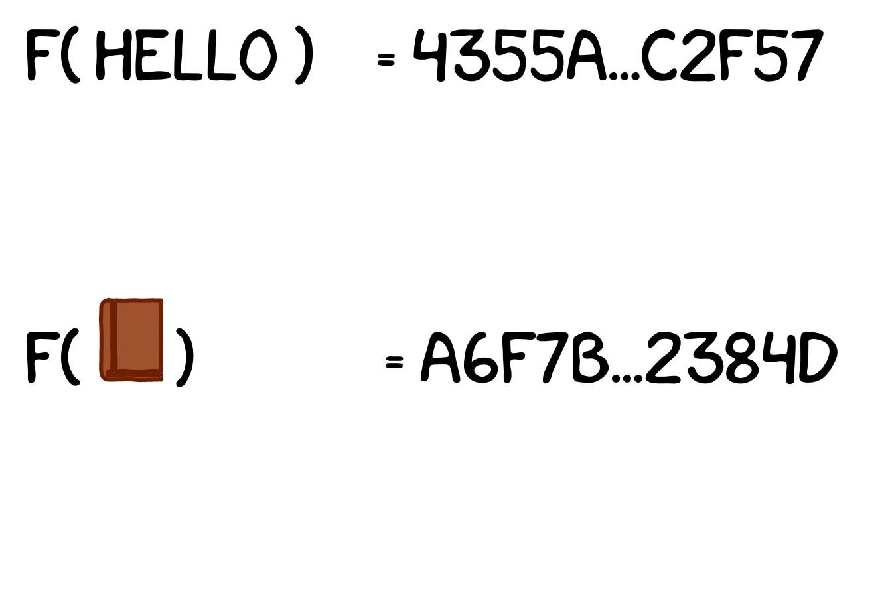
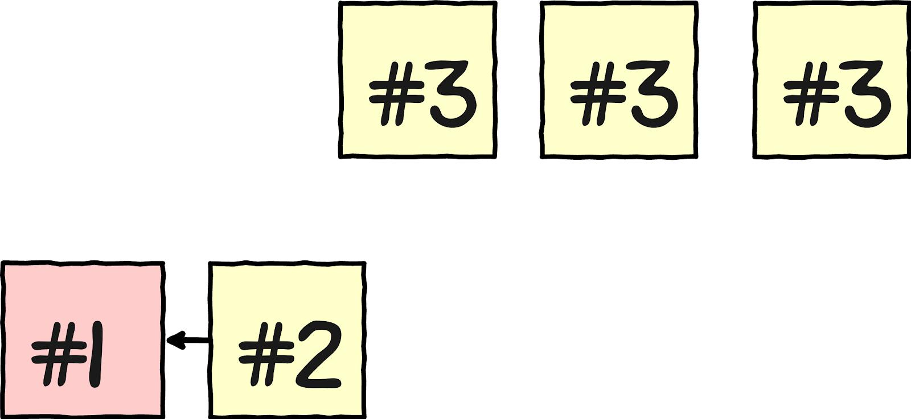

BLOCKCHAIN
изобретаем вместе
Автор Руслан Салихов специально для RSSchool

Криптография
Проблема двойной траты
Hash функция
Hash функция

Hash функция
Hash функция
(Криптографическая)
Консенсус
Proof-of-Work
Снова хеши
f(?) = 10101010110110010101001
| f(?) = 0..... | 50% |
| f(?) = 00.... | 25% |
Консенсус
Консенсус
Консенсус
Консенсус
Консенсус

НУЖЕН ЛИ ВАМ БЛОКЧЕЙН?

привлечение инвестиций